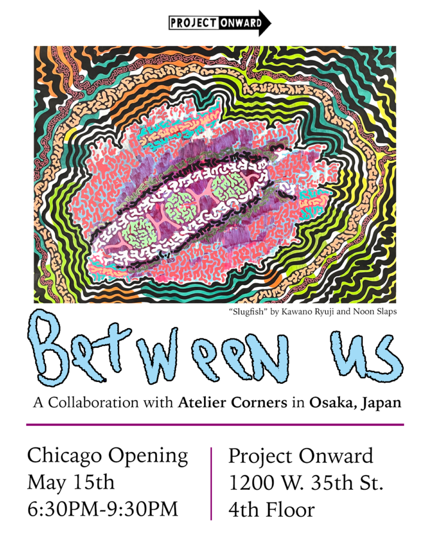

Between Us: A Collaboration with Atelier Corners in Osaka, Japan
This exhibition chronicles the collaboration between the artists of Project Onward and Atelier Corners, neurodiverse art studios located in the sister cities of Chicago and Osaka, Japan.
Artists at each studio began individual works that were then mailed overseas to be completed by a peer. The resulting pieces merge distinct visual languages, cultural contexts, and personal perspectives. Each piece is a dialogue across borders, celebrating creativity as a universal form of connection.
Between Us highlights the power of collective authorship and affirms the importance of neurodiverse artists within the global contemporary art conversation. The works of Between Us are exhibited simultaneously at Project Onward and at Atelier Corners in Osaka, creating an imagination-powered portal across a distance of 6,500 miles.